Issue Reporting App for College Residential Communities
Overview
This project presents a design concept of an issue reporting mobile app for a college residential community. Having lived in dorms all through my 4 years in college, I have witnessed my own and my peers' experience with maintenance, most of which was unfortunately inefficient and sometimes painstaking. This inspired me to research and design a system for a college residential community, which allows users to report issues and track the progress on resolutions.
Constraints
To keep the project more manageable, I mainly focused on the residents’ side of the product’s experience. I designed the experience with an intention of it being a larger, cohesive system that connects residents with management and maintenance; however, for this exercise, I focused on mainly the residents, to narrow my users down to one single type. More details regarding my intended system could be found in my stretch goals, which I will be discussed at the end of this case study.
I also approached this exercise primarily as a mobile application. This constraint was decided using my findings during the research phase (discussed in the next section). I found that most target users need a rapid and fussless way to report an issue. This is generally more easily achieved with a mobile application as opposed to a webapp, and also more suitable for such a type of user as young college students, who are avid cellphone users.
Discovery & Research
User Interview
I started by gathering information about my target users. To do this, I first conducted user intervews on the experience of reporting issues regarding maintenance or safety in college residence halls. The interview questions were about the frequency at which a student has to report an issue to management, common reported issues, and the intuitiveness of the process from starting a report to having an issue resolved.
I conducted interview sessions with 5 students at my school - Howard University. Based on the responses, I observed common patterns, pain points, needs, and behaviors, which I sorted out using an affinity map approach. From these findings, I was able to deduce valuable conclusions about the goals for the system.
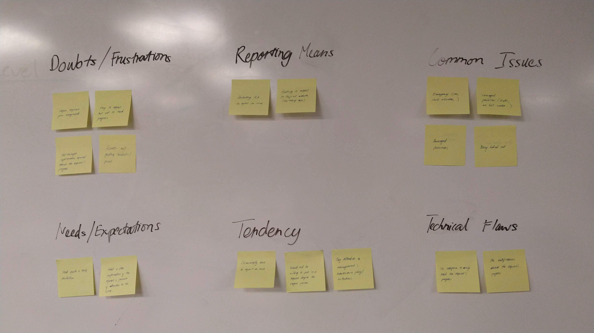From the interviews, I was able to narrow down the following common problems:
It’s easy to report an issue but hard to track the progress.
Some students would prefer to call their residence assistant or front desk rather than filling out a long form.
Most students usually encounter issues related to damaged facilities or fire hazards.
Competitive Analysis
Along with interviewing target users, I also conducted a competitive analysis on similar products to get a better insight into how the experience of community issue reporting is designed and executed. I explored 3 mobile apps: Spotlight, Bos:311, and SeeClickFix.
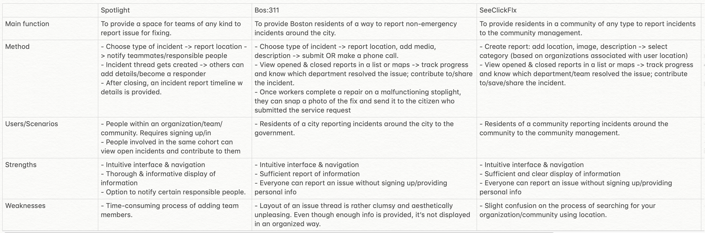This analysis helped me form a general idea of what is expected in an issue reporting app, how such an app should be structured, as well as certain flaws I’d want to avoid in my design of this experience.
Define
Problem Statement
From the interviews and the competitive analysis, I was able to define a problem statement:
Residents of college residential communities needs a way to conveniently report an issue and track its resolution, because communication from management is often lacking and the reporting process is inefficient.
To solve this problem, I define 3 major goals:
Provide a quick and easy way for residents to report an issue.
Present residents with sufficient details to track the progress of an issue’s resolution.
Efficiently connect residents with management and maintenance workers.
Personas & User Journey Map
Using the findings from my research, I developed 2 main personas and journey maps for my application: an active user and a conditional user.
Lisa Thomas - Active User
Lisa is an active user who generally pays more attention to her surroundings and living environment. She would take matter into her own hand to report an issue, and often would do so promptly.
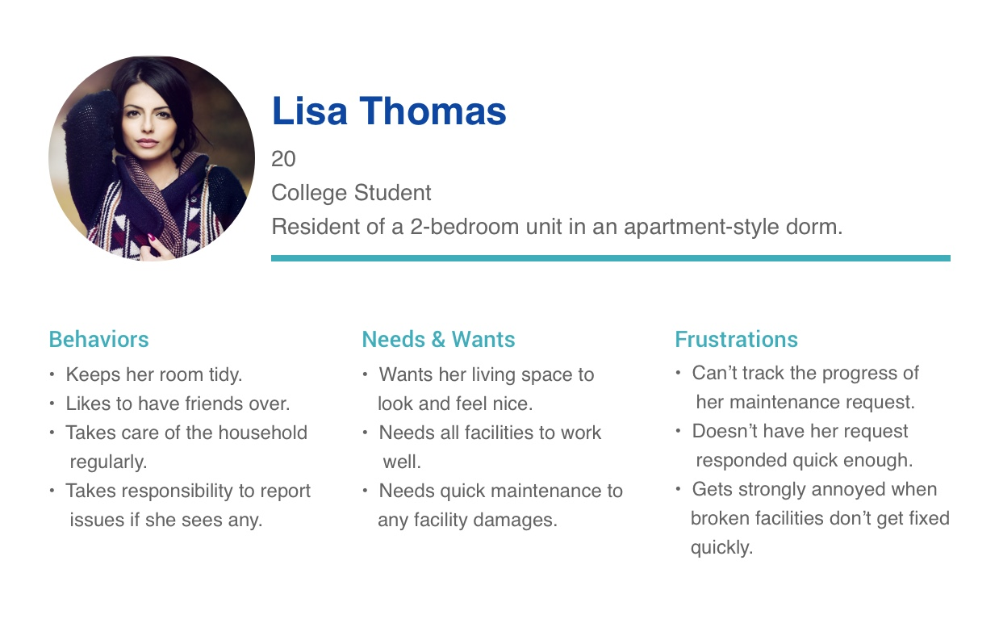Chris Anderson - Conditional user
Chris is a conditional user who doesn’t actively feel responsible for issues that don’t directly affect him. For issues that personally interest him, Chris would not always promptly take action, unless the issue requires urgent help.
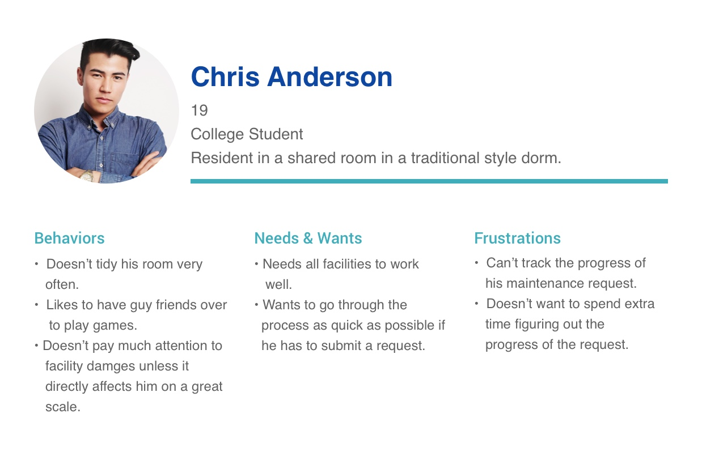Using these personas, I mapped out two user journey maps for each persona. The journey maps helped pinpoint the target users' key interactions with the app, their behaviors, and opportunities to solve their pain points, as these users go through each step of the issue reporting task.
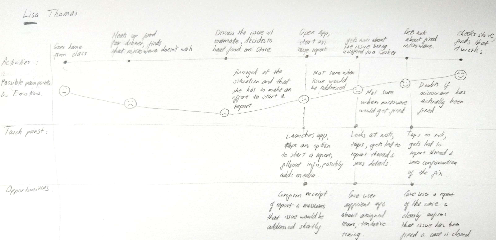 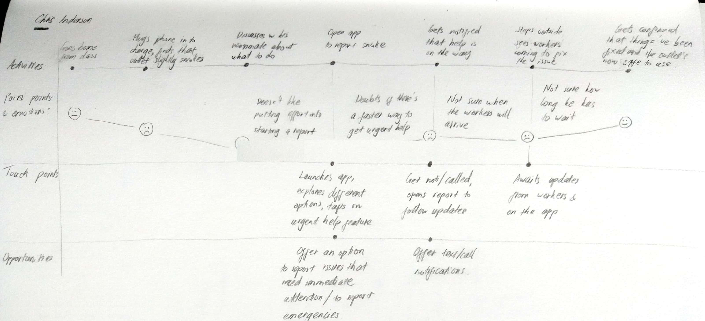These personas and journey maps were significantly helpful during the next step of brainstorming and ideation, as they helped revealing major pain points and the application’s potential opportunities to address those difficulties.
Brainstorming & Ideation
Using my synthesized research findings, I started brainstorming possible solutions, first by whiteboarding ideas and rough sketches to form rough ideas of how a user would interact with the app and complete a task. After a few rounds of iterations, I was able to start forming the features list and user flow of the application.
 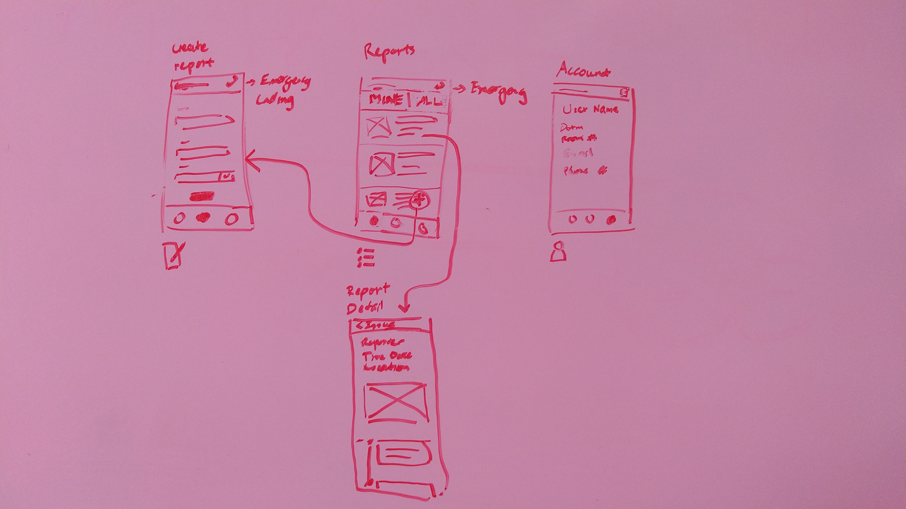
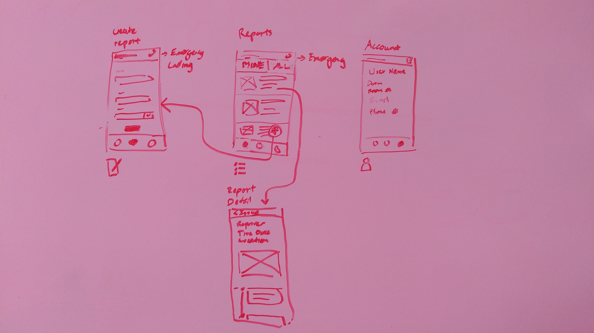
Since the application revolves around the one experience of reporting an issue, I opted for a bottom navigation with 3 main views, with the reporting form being the action of the FAB:
Reports (the default home view): a list of reported issues
Create new report: a report form to fill out and submit.
Profile: an overview of the user’s information.
After deciding on the features list and user flow, I started wireframing to determine the layout and step of the app's key screens. I first sketched on paper, then moved onto creating mid-fidelity digital wireframes.
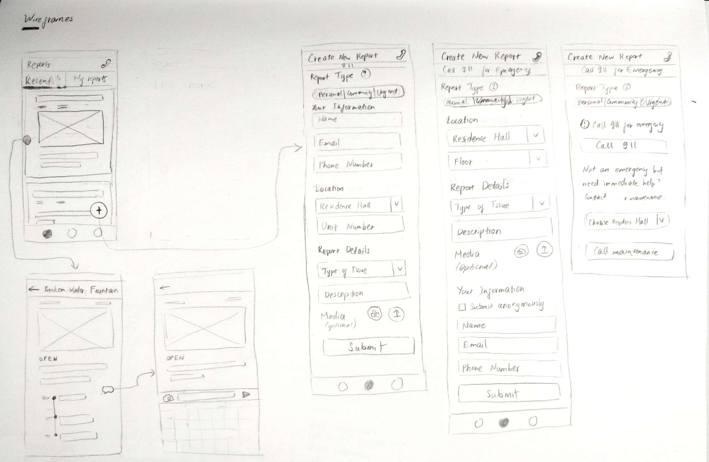I purposefully went with a layout inspired by Material Design, as I saw that this design system would help me easily achieve my intended look, feel, and function for the app: a clean, friendly and straightforward experience. Below is the final lo-fi wireframes after rounds of iteration in Sketch.

Using the mid-fidelity wireframes, I created a rapid prototype, which was used to conduct a few usability testing sessions to evaluate the overall user flow and test my assumptions. I had 5 students complete certain tasks related to reporting issues and viewing reports, and interviewed them throughout the tests. These sessions proved to be significantly helpful, as I discovered lots of opportunities and flaws with the then-current design.
Overall, the test users were able to grasp the application’s features and had little to no problem completing tasks. However, they did encounter certain types of frustration along the process. Some major flaws were involved with a user’s confusion with the tags that convey an issue’s type and progress, and the inability to quickly filter through a list of reports.
High-fidelity Mockups
Taking into consideration these findings, I started iterations on the wireframes and gradually added layers of higher-fidelity elements. After a few iteration rounds, I arrived at a high-fidelity mockup phase of the application.
Upon launching the app for the first time, users would go through a single onboarding step of providing information on where they’re residing. This would help the application locate the users and their respective maintenance/management service.
The home screen - Reports - is divided into 2 main tabs: My Reports and Public Reports. The 2 distinct tabs are based on my observation that among the issues commonly reported by the participants in the user interviews, there are two major categories of issues: those pertaining to one’s personal interests, and those to the whole community’s.

While personal issues are only relevant to certain individuals, public issues affect the whole community and therefore deserves wider attention. For instance, if some gym equipments get broken, a lot of gym enthusiasts within a community might all want to know if they have been fixed. Thus, I decided to design an experience that allows common issues to be publicly displayed and followed by all individuals within a community, while personal issues are only communicated between the reporter and maintenance/management.
The My Reports tab show all the reports submitted by the user, both personal and public issues, since I intend for a user to be able to follow all of the issues he/she has reported. Meanwhile, Public Reports only shows the issues related to the whole community. On each tab, each report is displayed within a card that’s marked with tags indicating its progress, and whether it’s a personal or public issue, in case of the My Reports tab.
Upon clicking on each of the report, the card expands to a full screen display of the report’s details, which also features a timeline of updates on the issue. Here, I intend for a notification to be sent to a user whenever there’s a new update on his or her report, which he or she can choose to turn on or off in the settings. The notifications’ purpose are to enhance communication with residents about their reports, and keep them more on track with the progress of an issue’s resolution. A user also has the ability to comment on an open issue whenever there’s an update he or she would like to add.
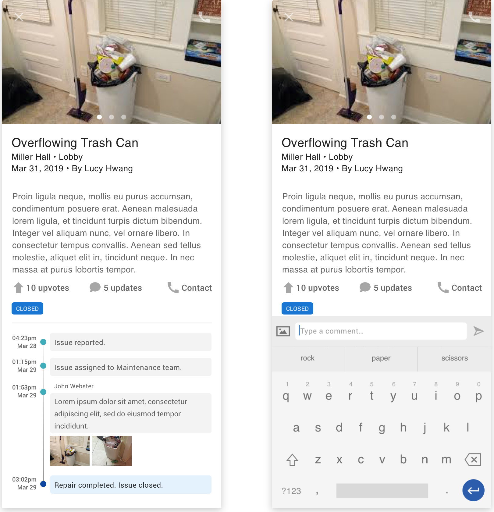After finding through user testing that the application was lacking an ability to quickly sort and filter through a list of report, I added these functions to the Reports tab.
The user can sort the reported public issues by date or by upvotes - also a suggestion discovered from usability testing. Sorting by upvotes let a resident quickly scan through issues based on relevance, potentially saving the problem of people creating duplicate reports of the same issue. Users can also filter public reports based on location or progress. Similarly, in My Reports, users can filter reports based on type of issue and progress.
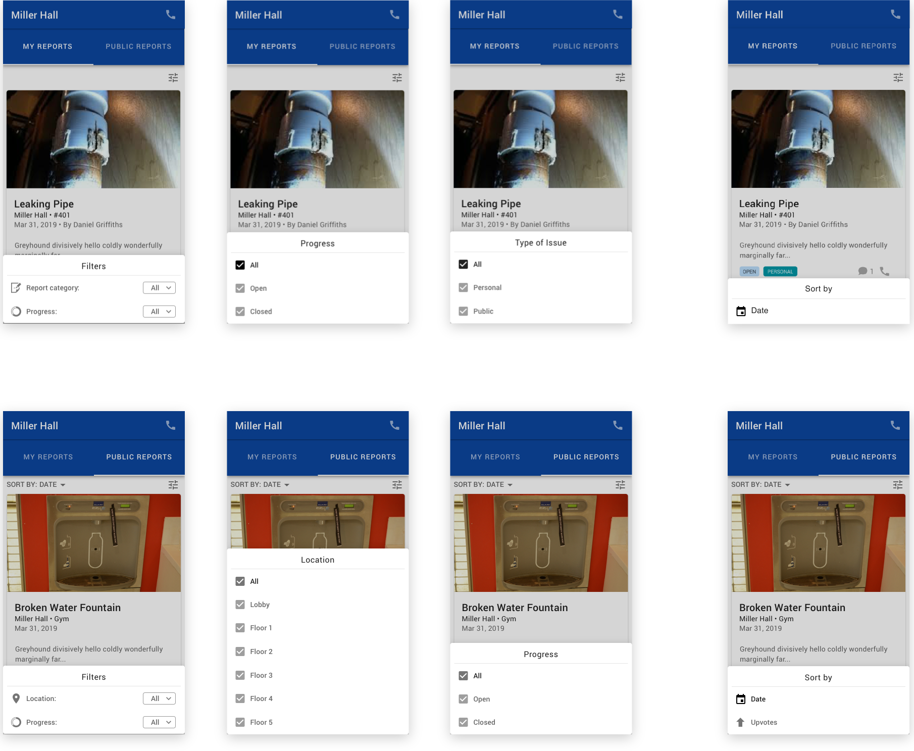The Create New Report view presents the user with a concise form to fill out details regarding the issue being reported. Here, I purposefully put a prompt for the type of issue at the top of the screen, to dictate which information would be displayed to the user.
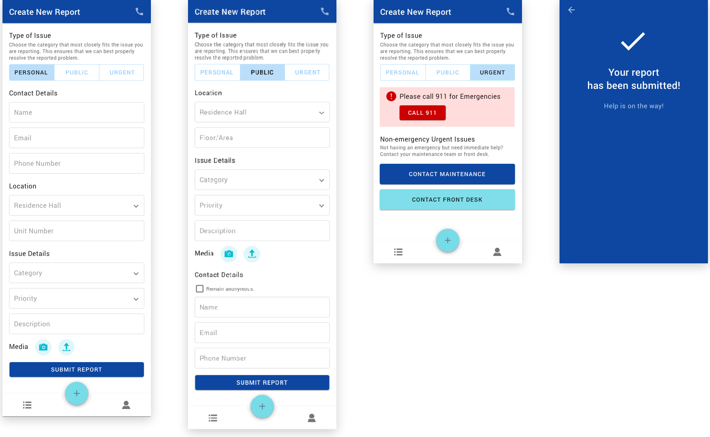I decided for the application to offer 3 main types of issues: personal, public, and urgent. The personal and public forms are for the discussed personal and public issues, respectively. These two forms are fairly similar, with form fields being straightforward and generously spaced out to cater for better legibility. In the public issue form, a user has the option to remain anonymous when submitting a report.
The urgent tab provides recommended actions rather than a form, since urgent matters require immediate attention. Knowing that emergencies could happen, I put in a notice prompting the user to call 911 for these matters. Meanwhile, there could be non-emergency issues that also require prompt assistance, such as a sudden power outage or suspicious activity. For those situations, I decided to put in options to contact maintenance workers or a residence hall’s front desk.
Upon submitting a report form, the application would present a confirmation screen. This is particularly important, since this screen reassures users that their reports have been received, and that help is on the way.
In addition, upon choosing a category of issue, if the issue is a common one and can potentially be fixed without the help from a professional, users would be prompted to find help from a self-help guide.
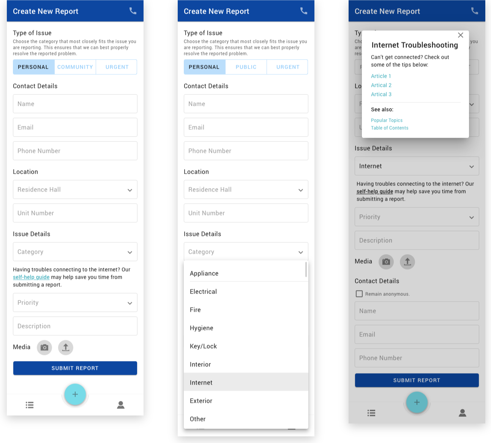The Profile tab simply displays all of a user’s information. If users have not provided their personal contact details, they would be prompted to do so upon first opening this tab or upon editing their profile, with a notice that this provided information would save from re-entering their information for every new report created.
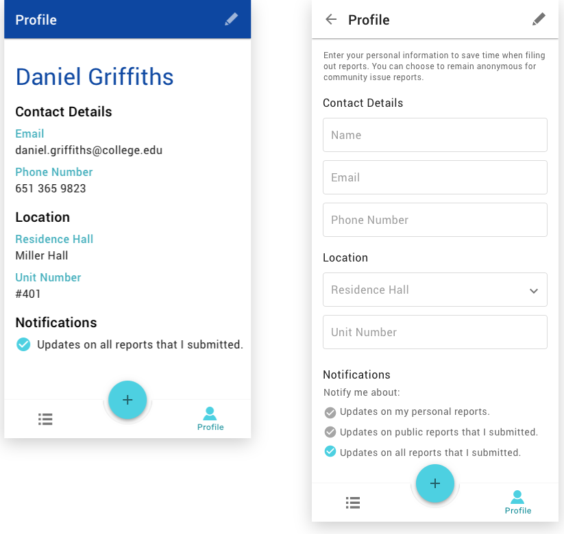Prototype
Using the high-fidelity mockups, I put together a prototype to better demonstrate the interactions involved throughout the application's experience.
Stretch Goals
Due to time constraint and other limitations, I was not able to address several other intended elements of this experience. As discussed earlier in the case study, I designed this experience with the intention for it to be a cohesive system that could be utilized by residents, management, and maintenance workers alike. When all information is stored and communicated within one environment, it would be significantly easier for all of the mentioned parties to be notified of reports, take action, and track progress.
Another stretch goal for this experience is to expand it into a web application. A mobile app provides a quicker way for a college student to easily pull out his or her phone and put in a report. However, for other intended users of the system like those who work for a residence hall’s management, a web app would be more applicable. Also, under certain circumstances, a resident may need to input a lot of information, which may be more easily done on a computer as oppose to a phone.